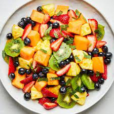

Refreshing Fruit Salad

Ingredients:
- 2 cups watermelon, cubed
- 2 cups pineapple, diced
- 1 cup strawberries, hulled and halved
- 1 cup grapes, halved
- 1 cup blueberries
- 1 cup kiwi, peeled and sliced
- 1 tablespoon honey (optional)
- Fresh mint leaves for garnish
Instructions:
- Wash and prepare all the fruits as needed.
- In a large mixing bowl, combine the watermelon, pineapple, strawberries, grapes, blueberries, and kiwi.
- If desired, drizzle honey over the fruits for added sweetness. Toss gently to combine.
- Chill the fruit salad in the refrigerator for at least 30 minutes before serving.
- Before serving, give the fruit salad a gentle toss to make sure the flavors are well combined.
- Garnish with fresh mint leaves for a burst of color and extra freshness.
- Serve the refreshing fruit salad in bowls or on a platter. Enjoy!